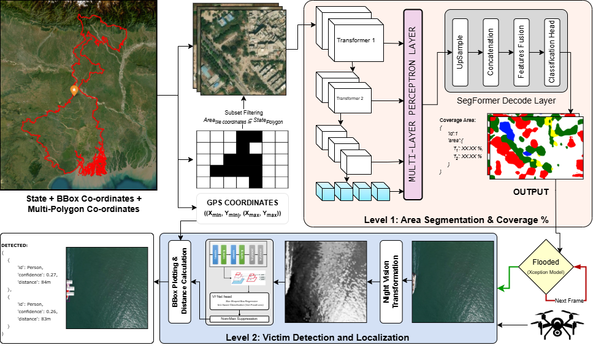

Method
Res-GeoAI operates through a hierarchical multimodal pipeline that bridges macro-level satellite analysis with micro-level UAV victim localization.
1
Satellite Flood Mapping
Geographic regions are tessellated into tiles. A modified SegFormer with multiscale attention performs semantic segmentation, computing per-pixel flood probability and overall coverage.
2
Flood Validation
Candidate flood regions are validated via a lightweight Xception-based classifier. UAV deployment is triggered when confidence > 0.7 and flood coverage > 10%.
3
UAV Victim Detection
UAVs follow a spiral search pattern and apply night-vision transformation. VarifocalNet with IoU-aware loss detects victims; GPS coordinates are computed from bounding boxes.
